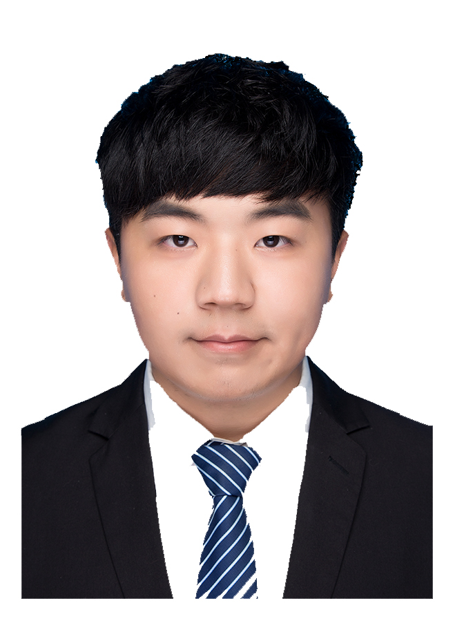
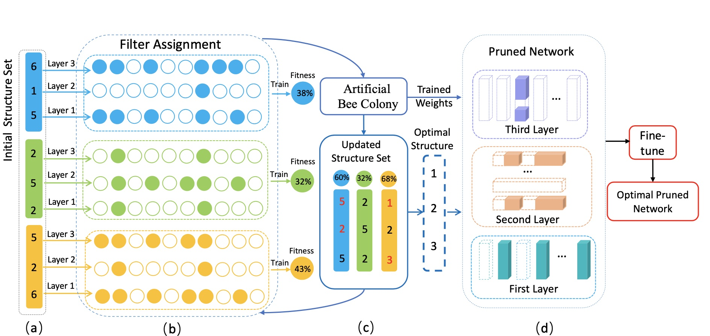

|  |
First-year Ph. D Student at Xiamen University |
[Biography] [Latest News] [Publications] [Professional Activities] [Major Awards] [Statistics]
Biography [back top]
I am currently a first-year Ph. D student in the Department of Artificial Intelligence, School of Informatics, Xiamen University, advised by Prof. Rongrong Ji. Earlier, I received the B.S. degree from the Department of Artificial Intelligence, School of Informatics, Xiamen University.
My recent research interests are to develop efficient vision models.
- 06/2022 -- Now: Research Intern, Peng Cheng Lab, Shenzhen, China
- 09/2021 -- 06/2022: Research Intern, VIVO AI Lab, Shenzhen, China
- 09/2020 -- 06/2023: M.S. in Computer Technology, Xiamen University, Xiamen, China
- 09/2016 -- 06/2020: B.S. in Computer Science and Technology, Xiamen University, Xiamen, China
Latest News [back top]
- 09/2022: One paper accepted by NeurIPS 2022
- 07/2022: One paper accepted by IEEE TPAMI
- 02/2022 -- 03/2022: Two papers accepted by IEEE TNNLS
Publications [back top]
Journal
 |
Mingbao Lin, Yuxin Zhang, Yuchao Li, Bohong Chen, Fei Chao, Mengdi Wang, Shen Li, Yonghong Tian, Rongrong Ji✉
1xN Pattern for Pruning Convolutional Neural Networks IEEE Transactions on Pattern Analysis and Machine Intelligence (TPAMI), 2022 [arXiv] [code] |
 |
Mingbao Lin, Liujuan Cao✉, Yuxin Zhang, Ling Shao, Chia-Wen Lin, Rongrong Ji
Pruning Networks with Cross-Layer Ranking & k-Reciprocal Nearest Filters IEEE Transactions on Neural Networks and Learning Systems (TNNLS), 2022 [pdf] [arXiv] [code] |
 |
Yuxin Zhang, Mingbao Lin, Chia-Wen Lin, Jie Chen, Yongjian Wu, Yonghong Tian, Rongrong Ji✉
Carrying out CNN Channel Pruning in a White Box IEEE Transactions on Neural Networks and Learning Systems (TNNLS), 2022 [pdf] [arXiv] [code] |
Conference
 |
Yuxin Zhang, Mingbao Lin, Zhihang Lin, Yiting Luo, Ke Li, Fei Chao, Yongjian Wu, Rongrong Ji✉
Learning Best Combination for Efficient N:M Sparsity Neural Information Processing Systems (NeurIPS), 2022 [arXiv] [code] |
|  | Mingbao Lin, Rongrong Ji✉, Yuxin Zhang, Baochang Zhang, Yongjian Wu, Yonghong Tian
Channel Pruning via Automatic Structure Search The 29th International Joint Conference on Artificial Intelligence (IJCAI), 2020 [pdf] [arXiv] [code] |
Preprint
 |
Mingbao Lin, Mengzhao Chen, Yuxin Zhang, Ke Li, Yunhang Shen, Chunhua Shen, Rongrong Ji✉
Super Vision Transformer arXiv preprint arXiv:2205.11397 [arXiv] [code] |
 |
Yuxin Zhang, Mingbao Lin, Mengzhao Chen, Zihan Xu, Fei Chao, Yunhang Shen, Ke Li, Yongjian Wu, Rongrong Ji✉
Optimizing Gradient-driven Criteria in Network Sparsity: Gradient is All You Need arXiv preprint arXiv:2201.12826, 2022 [arXiv] [code] |
 |
Yuxin Zhang, Mingbao Lin, Fei Chao, Yan Wang, Ke Li, Yunhang Shen, Yongjian Wu, Rongrong Ji✉
Lottery Jackpots Exist in Pre-trained Models arXiv preprint arXiv:2104.08700, 2021 [arXiv] [code] |
Professional Activities [back top]
- Conference Reviewer: ICML 2022, NeurIPS 2022
Major Awards [back top]
- Xiamen University Scholarship, 2017,2018,2019